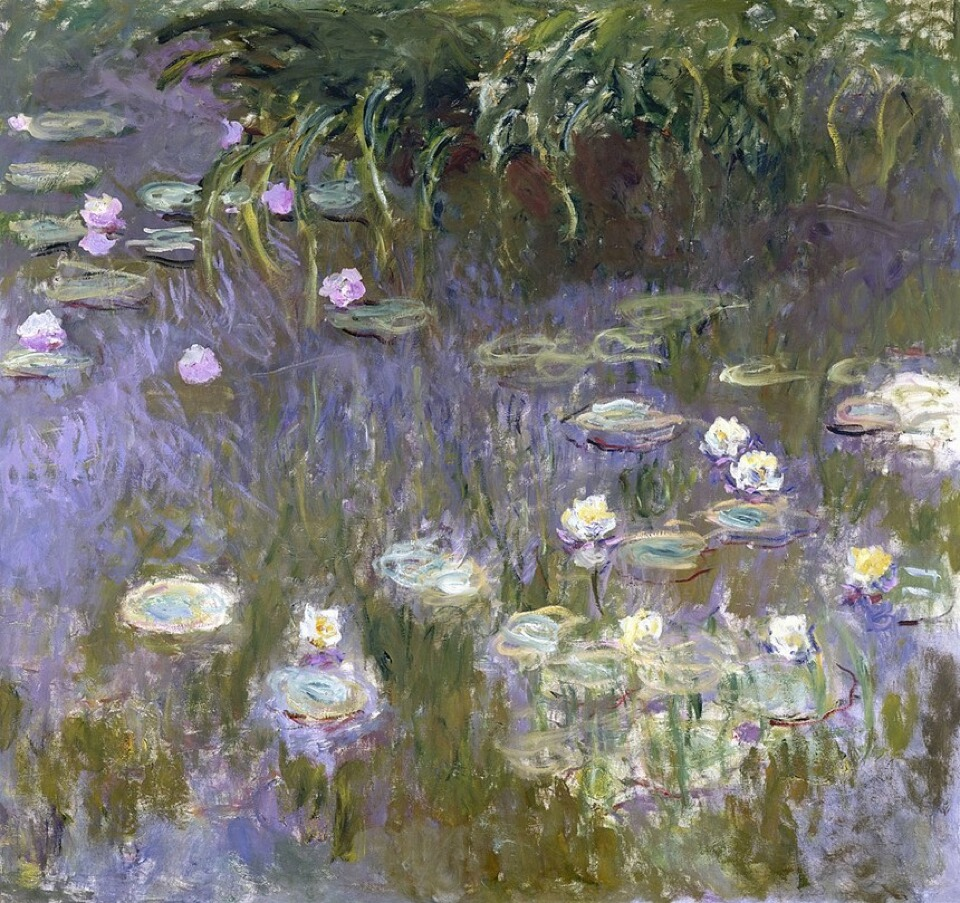
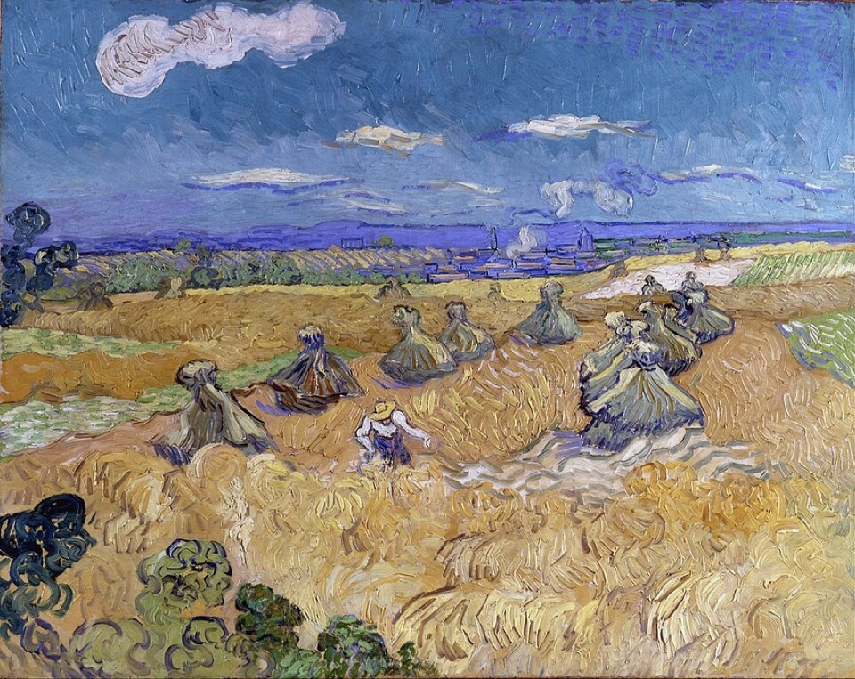
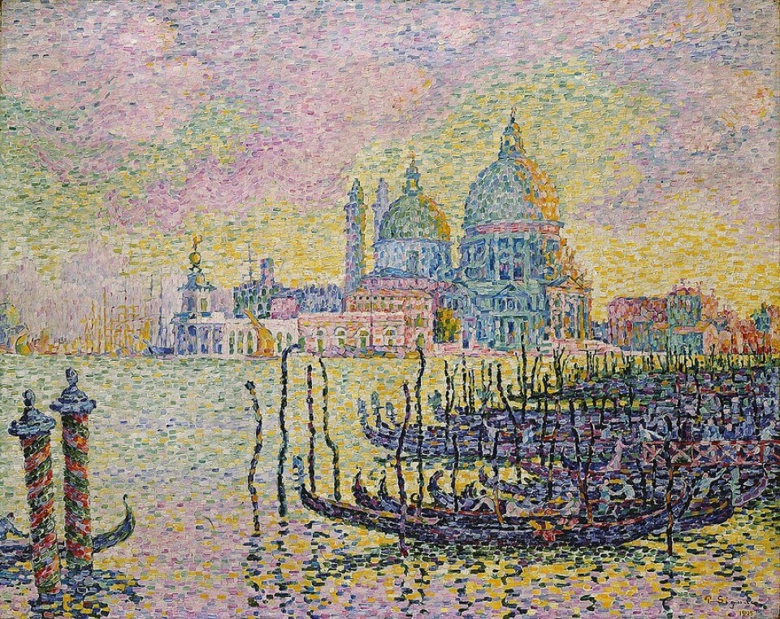

Where to start

Water Lilies《睡蓮》
Claude Monet克洛德・莫內 · c. 1922
Monet’s garden pond at Giverny, painted when he was in his early 80s.莫內在吉維尼花園的池塘，畫於他八十出頭時。

Wheat Fields with Reaper, Auvers《奧維的麥田與收割者》
Vincent van Gogh文森・梵谷 · 1890
A wheatfield at harvest time near Auvers, painted in July 1890 — the last weeks of Van Gogh’s life.1890 年 7 月，奧維附近收割季節的麥田——梵谷人生的最後幾週。

Entrance to the Grand Canal, Venice《威尼斯大運河入口》
Paul Signac保羅・希涅克 · 1905
The entrance to Venice’s Grand Canal, built from small rectangles of bright, pure colour that merge into water and boats when you step back.威尼斯大運河的入口，由一個個明亮純粹的小色塊組成，退後一步時，它們便融合成水面與船隻。
Every source used on ARTITUDE, in one place. Sources for each artwork are listed under By artwork.ARTITUDE 使用的所有資料來源都在這裡。每件作品的來源列在下方 By artwork。
Movement summaries and short introductions are written for ARTITUDE. Introductions not yet checked against museum sources are marked on their pages.流派簡述與簡短介紹由 ARTITUDE 撰寫。尚未與館方資料核對的介紹，會在作品頁上標示。
ARTITUDE is a companion for looking at art. It’s made for people who enjoy visiting museums but don’t always know where to start.
藝見 ARTITUDE 是陪你看藝術的夥伴，獻給喜歡逛美術館、卻常常不知道從哪裡開始看的人。
You don’t need an art history degree to appreciate a painting. Sometimes, all you need is a little guidance to look closer.
欣賞一幅畫，不需要藝術史學位。有時候，只需要一點引導，讓你看得更仔細。
We believe art appreciation should be accessible, but also trustworthy. Every fact in our full guides comes from a museum or published reference, museum interpretations and unchecked introductions are clearly labelled, and we only use images in the public domain.
我們相信欣賞藝術應該平易近人，也應該值得信賴。完整導覽裡的每一項事實都來自美術館或已出版的資料；美術館的詮釋和尚未查核的簡介都會清楚標示；我們也只使用公有領域的圖片。
Each artwork begins with a quick introduction: what you’re seeing, and one detail to discover with your own eyes. Want to know more? Explore the story behind the work, or put it alongside another painting to see what you might notice.
每件作品都從一段簡短的介紹開始：你看到的是什麼，以及一個值得親眼找找的細節。想知道更多？可以讀讀作品背後的故事，或把它和另一幅畫並排，看看你會注意到什麼。
Art can hold more than one meaning. We offer a starting point, not a final answer. What you make of it is entirely yours.
藝術可以有不只一種意義。我們提供的是起點，不是標準答案。你怎麼看，完全由你決定。
What we offer